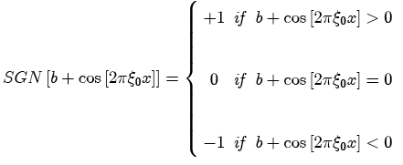

The square wave is the result of thresholding a sinusoid.

For a square wave, the bias b is set to 0.
Parameters:
Support: infinite
Area: zero for non-zero frequencies. If the frequency is zero, the sinusoid is equivalent to the constant function, and the area is infinite.
Symmetry: may be even (like cos[x]), odd (like sin[x]) or neither, depending on initial phase.
Read more about the square wave at: